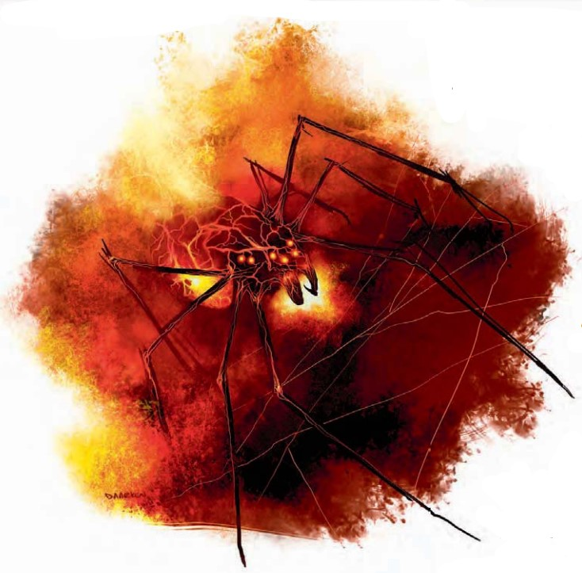

地狱蛛是致命的掠食者，它们的毒牙中燃烧着原初元素之怒。这类猎手常与火焰神�o的祭司或狡诈的火蜥蜴群体结盟，以自身能力辅助其他火焰生物。掌握正确仪式之人可以召唤地狱蛛。
战术与策略地狱蛛会猎捕并吞食比自身弱小的生物。它们利用火焰蛛网捕捉那些可能过于敏捷的猎物。战斗中，地狱蛛会先尝试用蛛网缠住敌人，然后接近敌人用毒牙撕咬。尽管智力有限，地狱蛛依然是狡黠而坚韧的猎手，能运用"跳跃攻击"在战斗中灵活进出。
生态即便在同族之中，地狱蛛也是贪婪的掠食者。它们在火元素位面过着独居生活。该位面较为弱小的居民普遍憎恨它们，而地狱蛛自身也会避免与其他同类接触。当一只地狱蛛年岁增长、体型也随之增大后，它会寻找配偶。两只求偶的地狱蛛会跳起一种诡异而仪式化的舞蹈，彼此环绕数小时，有时甚至持续数天。仪式结束时，两只地狱蛛会冲向对方，碰撞并爆炸，从而诞生出数百只幼蛛。地狱蛛的敌人与捕食者常常潜伏在起舞的配偶附近，伺机尽可能多地杀死幼蛛。幼蛛之间也会互相残杀。很少有地狱蛛能活到足够大、能够捕食兄弟姐妹以外的猎物。
地狱蛛会被拥有强大奥术或神能之人所吸引，愿意为那些知识渊博、能够召唤并指挥它们的存在服务。
环境地狱蛛可栖息在主物质位面的任何温暖地区，以及火元素位面。它们偶尔会被其他位面上的强大施法者召唤服役，尤其是那些侍奉或崇拜火神之人。
典型特征地狱蛛站立时高约4英尺，身体直径约8英尺。身体主要由岩浆与火焰构成，一只地狱蛛的重量可达600磅。透明的甲壳下翻涌着熔融岩石的旋流，构成其内部结构；火焰在其腹部与腿部的表面随机舞动。
阵营地狱蛛总是绝对中立。它们只关心作为一个种族的生存，为此而猎食、生活与交配。
典型宝藏地狱蛛几乎从不持有任何宝藏。它们火焰构成的躯体和巢穴会迅速摧毁贵重物品。
玩家角色法师、术士或拥有火领域的牧师可以使用召唤怪物VI或更高级的召唤怪物法术召唤地狱蛛。在召唤怪物列表（玩家手册287页）中，将地狱蛛视为6级列表上的生物。拥有火领域的牧师也可以使用高等异界盟友法术召唤地狱蛛，地狱蛛通常要求大量食物作为报酬。要完成上述任意一种方式，施法者必须在知识（位面）技能上至少拥有5级。此外，施法者还需完成一个魔法仪式，该仪式需要价值100金币的火欧泊粉末。研究该仪式需要两天的专注研习。
战斗地狱蛛会狩猎和饲养比自己弱的生物。它们使用火焰蛛网捕捉那些行动迅速和敏捷的猎物。在战斗中，地狱蛛会首先尝试用网纠缠敌人，然后用它们的毒牙咬住猎物。虽然只有有限的智力，地狱蜘蛛依然是狡猾和顽强的猎人，它们使用跳跃攻击迅速进入或撤离战斗。
火焰蛛网（Flame Web）(Ex)：每天八次，地狱蛛可以投出一道火焰蛛网。这与用捕网进行的攻击类似，但其最大射程为100尺，射程增量为20尺，且可以影响比蜘蛛体型最多大一个级别的生物。网会将目标固定在原地，使其无法移动。每轮，在地狱蛛的回合结束时，被纠缠的生物受到2d6的火焰伤害。一个被纠缠的人可以通过DC21的跳脱技能检定来逃出蛛网，或者通过DC25的力量检定破坏蛛网。这些检定DC基于体质，且力量检定中包含了+4种族加值。蛛网有12点生命值和5点硬度。如果火焰蛛网的任何部分受到5点或更多的寒冷伤害，网上的火焰会熄灭，网也变冷和变脆弱，从而将逃脱技能检定难度降低到16，并将力量检定难度降低到20。
火焰护盾（Fire Shield）(Su)：地狱蛛的身体散发出巨大的热量。任何生物用身体或武器接触地狱蛛或者抓住地狱蛛都会受到1d6的火焰伤害，一个生物每轮只会因这个能力受到一次伤害。
技能：地狱蛛在攀爬检定上有+8种族加值，地狱蛛总是能够在攀爬检定中取10，哪怕处于被突袭或受威胁的情况下。
有知识（位面）等级的人物可以更多地了解地狱蛛，当人物成功通过技能检定时，以下知识将被揭示，其中包括了更低DC的信息。
| 知识（位面） | 结果 |
|---|---|
| DC 18 | 这是地狱蛛，一种火元素生物。这个结果揭示了其所有元素特性及火亚种特性。 |
| DC 23 | 地狱蛛投出火焰蛛网捕获猎物。这些网由灼热的物质组成，对寒冷的抵抗能力很弱。 |
| DC 28 | 地狱蛛的啮咬会注入一种灼热的毒素，从内部灼伤受害者。 |
| DC 33 | 地狱蛛可以被那些学会了正确方法的人召唤出来。 |
| 资料栏位 | 地狱蛛 (Inferno Spider) 大型元素生物 (跨位面，火亚种) |
|---|---|
| 生命骰 | 14d8+56（119HP） |
| 先攻 | +7 |
| 速度 | 40尺(8格), 攀爬40尺 |
| 防御等级 | 22(�C1体型, +3敏捷, +10天生), 接触12, 措手不及19 |
| 基本攻击/擒抱 | +10/+19 |
| 攻击 | 近战 啮咬+14(2d6+7外加腐蚀毒素) 或 远程 火焰蛛网+12远程接触(2d6火焰加纠缠) |
| 全力攻击 | 近战 啮咬+14(2d6+7外加腐蚀毒素) 或 远程 火焰蛛网+12远程接触(2d6火焰加纠缠) |
| 面宽/触及 | 10尺/5尺 |
| 特殊攻击 | 腐蚀毒素(DC21, 3d6火焰/持续伤害3d6火焰), 火焰护盾 |
| 特殊能力 | 黑暗视觉60尺，颤动感知60尺，元素特性，DR 5/―，免疫火，元素免疫，战斗反射，寒冷易伤 |
| 豁免 | 强韧 +8，反射 +12，意志 +6 |
| 属性 | 力量20, 敏捷16, 体质18, 智力6, 感知11, 魅力11 |
| 技能 | 攀爬 +13, 躲藏 +8, 跳跃 +9, 聆听 +6, 侦查 +6 |
| 专长 | 警觉, 战斗反射, 闪避, 精通先攻, 钢铁意志, 灵活移动, 跳跃攻击 |
| 环境 | 见后文（未翻） |
| 组织 | 见后文（未翻） |
| 挑战等级 | 8 |
| 宝物 | 无 |
| 阵营 | 总是中立 |
| 进化 | 15�C20 HD(大型); 21�C28HD(超大型); 29�C40HD(巨型) |
| 等级调整 | ― |
描述（未翻）。地狱蛛使用火族语。